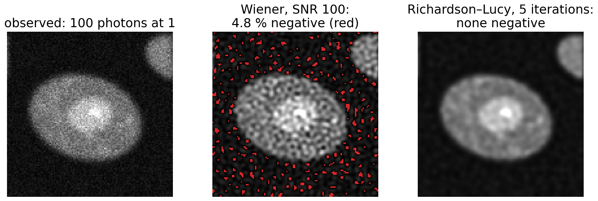
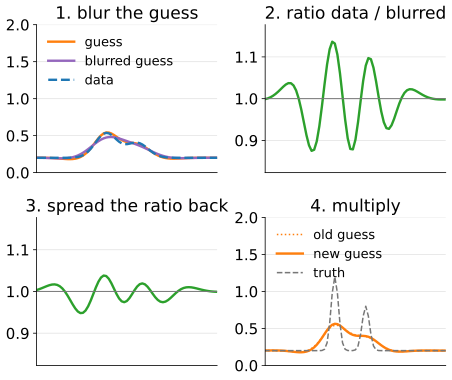
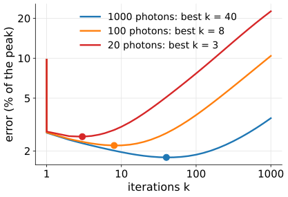
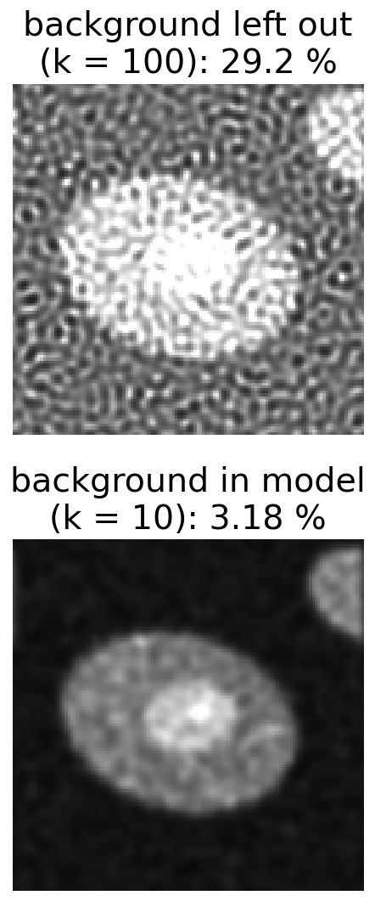
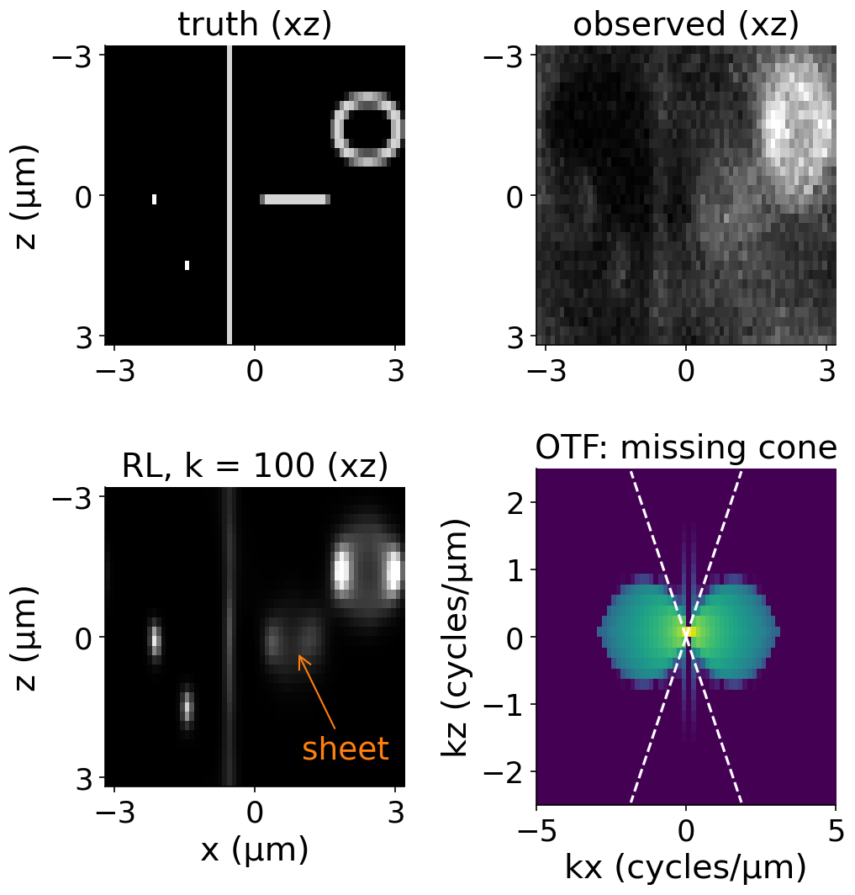
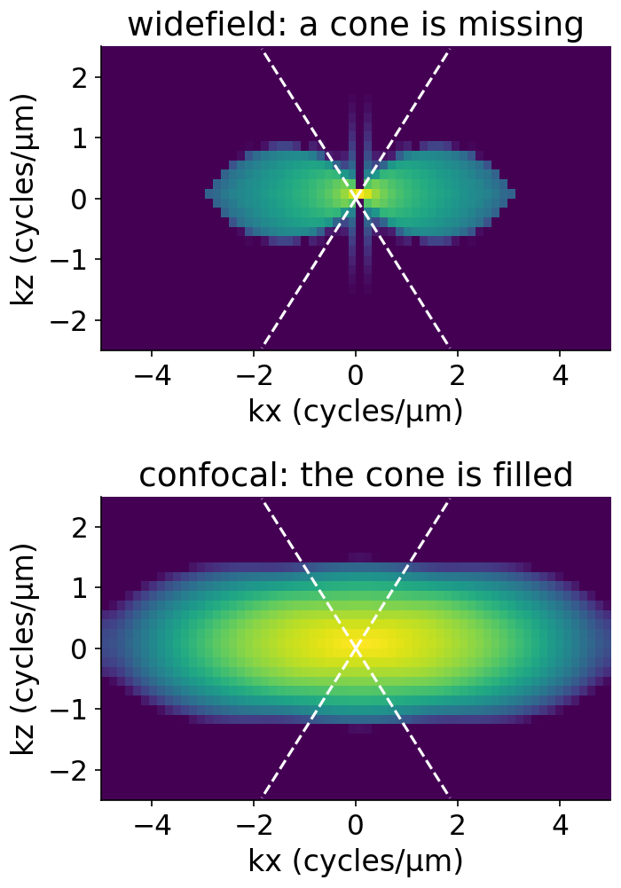
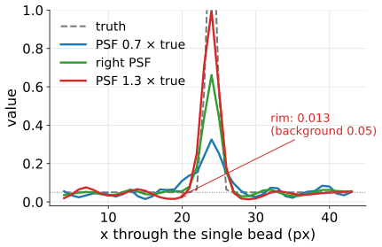
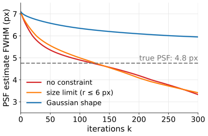
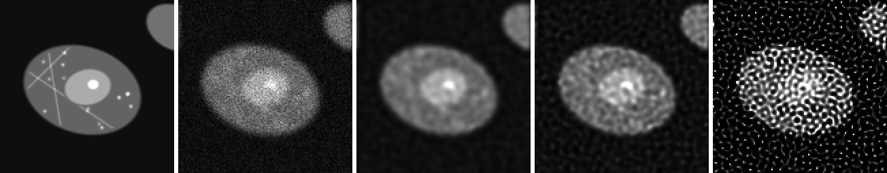

A fluorescence image counts photons (after removing the camera offset): never negative, Poisson noise whose variance equals the mean (camera noise unit).
Wiener and Tikhonov produce negative intensities next to bright objects (the last two units: up to 15 % of the pixels) and treat noise as equally large everywhere.
We want a restoration that keeps every pixel ≥ 0, keeps the total number of photons, and weights the data as Poisson counts.

Cell phantom, Gaussian PSF σ = 2 px, 100 photons at value 1. Wiener at SNR 100 (sharper than its best, SNR 18) turns 4.8 % of the pixels negative (red); Richardson–Lucy after 5 iterations has none.
Richardson–Lucy in words
Start from a flat guess (every pixel = the mean of the data). Then repeat:
Blur the guess with the PSF: what the microscope would show if the guess were true.
Compare with the data, pixel by pixel, as a ratio data / blurred guess. Where the guess is too dim the ratio is above 1, where it is too bright below 1.
Spread the ratio back with the PSF (mirrored): each object pixel collects the ratios of the image pixels it contributes to.
Multiply the guess by it.
Every factor is positive, so the guess stays non-negative; and (with a PSF that sums to 1) the total stays equal to the total of the data.

One RL step on two close peaks: the ratio is above 1 where the guess is too dim, below 1 where it is too bright; the new guess is sharper.
Pixel 2: the ratio spread back is 0.25 \cdot 1 + 0.5 \cdot 2 + 0.25 \cdot 1 = 1.5. Already sharper after two steps; the sum is 4 each time.
The math: RL from the Poisson likelihood
Model: y_i \sim \text{Poisson}\big((A\mathbf x)_i + b\big), A = convolution with h \ge 0, \sum h = 1, so A^\top\mathbf 1 = \mathbf 1. Log-likelihood (dropping terms without \mathbf x):
Gradient: \nabla\ell = A^\top\!\Big(\dfrac{\mathbf y}{A\mathbf x + b}\Big) - A^\top\mathbf 1. At a maximum with x_j > 0: A^\top\big(\mathbf y/(A\mathbf x + b)\big)_j = 1. RL is the fixed-point iteration
x_j \leftarrow x_j \cdot \Big[A^\top\Big(\frac{\mathbf y}{A\mathbf x + b}\Big)\Big]_j .
It is an EM algorithm (Shepp & Vardi 1982): the likelihood never decreases.
Non-negative: a product of non-negative factors. Flux: \sum_j x_j^{\text{new}} = \sum_i y_i\frac{(A\mathbf x)_i}{(A\mathbf x)_i + b}, which is \sum_i y_i for b = 0.
Try it: RL step by step
The number of iterations is λ
Recall from the last unit: an iteration from a flat image fills in strong (low) frequencies first and weak (high, noisy) ones last. RL does the same.
Semi-convergence: the error against the truth falls, then rises; the data fit keeps improving.
Fewer photons → stop earlier. In the demo (beads): best k = 40 at 1000 photons, 8 at 100, 3 at 20.
The misfit (Poisson deviance per pixel) reaches about 1 when the blurred estimate explains the data to the noise level: a discrepancy rule for RL.
Tomography’s MLEM (Radon day) is the same algorithm with the projector instead of the PSF.

Error against the truth for the beads of the demo at three photon levels: each curve has a minimum (dot), earlier with fewer photons.
The math: why stopping early regularises here too
Write \mathbf x = \bar x(\mathbf 1 + \boldsymbol\delta) around the flat start \bar x, with small \boldsymbol\delta and b = 0. Then A\mathbf x = \bar x(\mathbf 1 + A\boldsymbol\delta) and
\frac{\mathbf y}{A\mathbf x} \approx \frac{\mathbf y}{\bar x}\big(\mathbf 1 - A\boldsymbol\delta\big), \qquad \mathbf x_{\text{new}} \approx \mathbf x + \mathbf x \cdot A^\top\Big(\frac{\mathbf y - A\mathbf x}{\bar x}\Big).
Near a flat image this is a Landweber step with \omega \approx 1 (in units of \bar x): \mathbf x \leftarrow \mathbf x + A^\top(\mathbf y - A\mathbf x). Per frequency the k-th iterate keeps about 1 - (1 - |H(f)|^2)^k of the inverse: strong frequencies early, weak ones after about 1/|H|^2 iterations.
Offset and background
RL needs counts: subtract the camera offset first (camera noise unit) but keep the photon scale; a negative pixel breaks the Poisson model.
Most images also have a background: out-of-focus haze, autofluorescence, a few photons per pixel everywhere.
Put it in the model, \mathbf y \approx A\mathbf x + b. If b is left out, RL must explain the background by the object, and it sharpens the background into speckles (the estimate is a sum of bright points).
In the demo (cell phantom, 100 photons at 1, background 30 photons): forgetting b gives at least 27.5 % error at every k; with b in the model 3.18 % at k = 10.

RL on the cell phantom with 30 background photons per pixel. Top: background left out, the haze turns into speckles. Bottom: background in the model.
3D: widefield stacks
Widefield 3D stacks are where deconvolution is most used. Recall (image formation day): the 3D PSF of a widefield microscope is elongated in z: an hourglass of out-of-focus light above and below each point, and its OTF has a missing cone around the k_z axis.
3D RL with the 3D PSF puts out-of-focus light back where it came from: contrast and axial resolution improve a lot. A bead’s axial FWHM in the demo: 1.48 µm blurred, 0.53 µm after 100 iterations.
But the missing cone is not filled: a thin horizontal sheet (all its frequencies along k_z) stays smeared in z: 200 nm thick, 4.7 µm blurred, still 1.3 µm after 100 iterations.
Vertical structures are restored better than horizontal ones.

The demo’s stack in xz (widefield, NA 0.8): beads, a vertical filament, a horizontal sheet, a hollow sphere; and its OTF, missing cone dashed.
The math: the missing cone
The amplitude PSF of a lens is the inverse Fourier transform of the pupil: a cap of the sphere |\mathbf k| = n/\lambda with half-angle α (\sin\alpha = \mathrm{NA}/n). The intensity PSF is its squared magnitude, so the OTF is the autocorrelation of the cap: the set of differences \mathbf k_1 - \mathbf k_2 of two points on it.
The differences fill a torus-like region in (k_r, k_z): up to k_r = 2\,\mathrm{NA}/\lambda laterally.
Near the origin two nearby points on the cap differ in a direction tangent to the cap: at most at angle α to the k_r axis. So for small k_r only |k_z| \lesssim k_r\tan\alpha is reached: a cone around the k_z axis is missing.
A horizontal sheet, uniform in x and y, has only k_r = 0: of all its frequencies only k_z = 0 survives.
Confocal: excitation PSF × detection PSF, so the OTF is the convolution of two widefield OTFs, which fills the cone.
Try it: a 3D stack
Confocal, and depth
Confocal: the pinhole already rejects most out-of-focus light, and its OTF has no missing cone. Deconvolution gains less in contrast, but it works more reliably, and sheets are restored too.
Depth: the 3D PSF must match the depth. Imaging into water with an oil lens (refractive index mismatch) makes the PSF asymmetric in z and change with depth. A PSF measured at the coverslip is wrong 30 µm deeper.
Sampling: the z-step must resolve the PSF axially (Nyquist, image formation day); otherwise deconvolution has nothing to work with.

OTF magnitude in the (kx, kz) plane (log scale) for the demo’s PSFs; dashed: the edges of the missing cone.
The PSF you use
PSF used
result
looks
too narrow
leftover blur, under-restored
safe, but objects too large
right
best
too wide
over-sharpening, dark rims (halos) around bright objects, ringing, objects smaller than they are
crisp, wrong
Measured PSF (beads, image formation day, resolution): includes the real aberrations, but noisy and from one depth.
Computed PSF: clean but ideal.
Common compromise: fit a model PSF to measured beads.
In the demo (beads, 1000 photons, k = 100): the single bead’s FWHM is 3.25 px with a PSF 30 % too narrow, 2.63 px with the right one, 2.57 px with one 30 % too wide (truth 1.45 px); the too-wide PSF digs a rim down to 0.013 around it (background 0.05).

A row through the single bead after 100 RL iterations with a PSF 0.7, 1 and 1.3 times the true width.
Blind deconvolution
Estimate object and PSF together: alternate an RL step on the object (PSF fixed) with an RL step on the PSF (object fixed).
Very under-determined: the trivial answer “PSF = a point, object = the blurred image” explains the data perfectly.
So it needs constraints: PSF non-negative, sum 1, limited size, smooth, or a parametric shape (e.g. Gaussian with unknown width).
Use it when no PSF can be measured (motion, unknown aberration); otherwise prefer a measured or computed PSF.
In the demo (start 50 % too wide, FWHM 7.1 px; true 4.8 px): unconstrained, the PSF width passes the true value near 100 iterations and keeps shrinking (3.3 px at 300). A size limit does not stop this; a Gaussian shape slows it (6.0 px at 300).

Width of the blind PSF estimate against the iterations (beads, 1000 photons): without a shape constraint it drifts through the true width towards a point.
Try it: the PSF you use
Artefacts

Cell phantom, Gaussian PSF σ = 2 px, 100 photons at value 1. From the left: truth, observed, RL after 5, 25 and 1000 iterations (RMSE against the truth 0.030, 0.039 and 0.205; the observed image 0.050; values 0..1).
Ringing: ripples next to sharp edges and around bright objects.
Speckling: noise turned into bright dots after many iterations (right image).
Halos: dark rims from a PSF that is too wide.
Border artefacts: the periodic FFT; pad and taper (unit 1).
Axial smearing of horizontal structures in widefield 3D: the missing cone.
Summary
Richardson–Lucy: blur the guess, compare as a ratio, spread the ratio back, multiply. Never negative, keeps the photons, maximises the Poisson likelihood (EM).
Iterations = regularisation: semi-convergence; fewer photons → stop earlier; a misfit of about 1 per pixel means the noise level is reached.
Needs offset-corrected counts and a background term, or the background turns into speckles.
3D: puts out-of-focus light back; restores beads and vertical structures, but the missing cone keeps horizontal sheets smeared. Confocal has no missing cone.
PSF too narrow: leftover blur. Too wide: halos, ringing, objects too small. Blind estimation needs constraints and still drifts towards a point.